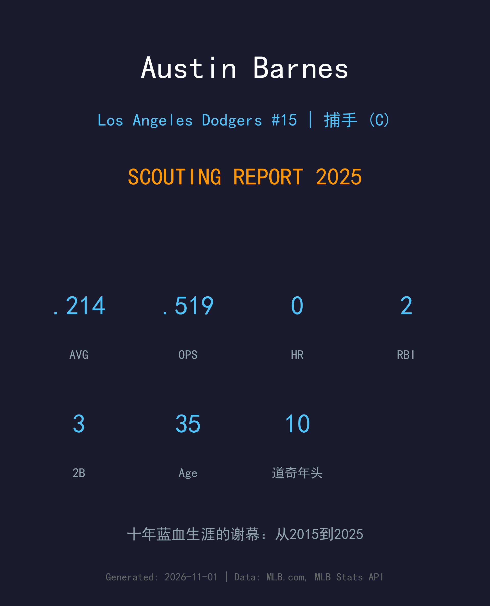
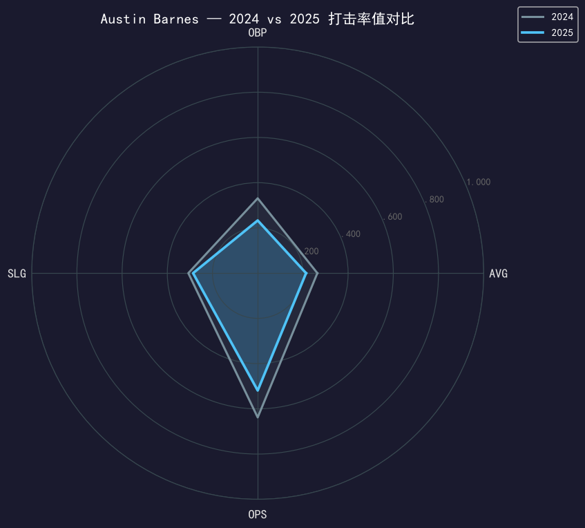
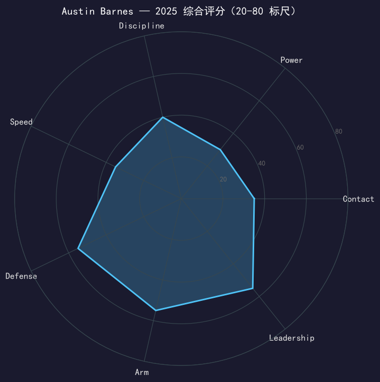

Los Angeles Dodgers #15 | 捕手 | 右打 | 十年蓝血老兵 · "Sam"

⚠️ 小样本警告：本报告基于 13 场 / 44 个打席的告别赛季数据。
Austin Barnes 的 2025 赛季在 5 月 20 日画上句点——道奇在这一天释出了这位效力十个赛季的老兵。13 场 .214/.233/.286 的数据早已不是重点；重要的是这 13 场是一段道奇编年史的尾声：从 2015 年首秀到 2020 年世界大赛冠军，从 Kershaw 的私人捕手到三代投手群的定海针，Barnes 的道奇生涯是「glue guy」的教科书定义。
他的离开标志着道奇捕手时代的彻底换血：Barnes 走后，Smith-Rushing 时代正式开启。对 35 岁的 Barnes 来说，接下来的问题是另一支球队还是退役——但无论答案如何，他的名字已经写进了道奇的队史。
作为道奇主战轮换捕手随队夺得 2020 年世界大赛冠军——那个赛季他的蹲捕与关键安打是冠军拼图的核心一环。
多年担任 Clayton Kershaw 的 personal catcher，与队史最伟大投手形成的默契成为道奇传统的一部分。
十个赛季、三代打线、两座世界大赛奖杯（2020、2024）。2025 年 5 月 14 日被 DFA，5 月 20 日释出——一个时代就此落幕。

| 赛季 | G | PA | AVG | OBP | SLG | OPS | HR | RBI | BB | SO | SB |
|---|---|---|---|---|---|---|---|---|---|---|---|
| 2024 | 54 | 156 | .264 | .331 | .307 | .638 | 1 | 11 | 14 | 36 | 3 |
| 2025 | 13 | 44 | .214 | .233 | .286 | .519 | 0 | 2 | 1 | 14 | 0 |
从 2024 年的 .264（一个小回春）到 2025 年的 .214/.233，衰退曲线在 35 岁终于压过了他的 framing 价值。14 次三振对 44 个打席（31.8%）是他生涯最差的 contact 表现。道奇在 5 月 14 日做出 DFA 决定时，数据与 roster 效率站在了同一边——这不是无情的商业，而是运动员与时间赛跑的标准结局。
Barnes 的整个职业生涯都是 defense-first：frame 稳定、配球聪明、与投手群的化学反应是数据无法捕捉的。Kershaw 指定他蹲捕的那些年，是道奇投手文化的具象化。2025 年的 13 场，他的蹲捕依然可靠，只是 bat 已经带不动 roster 位置。
赛季初作为 Smith 的备份与 Rushing 的 mentor 开始，4 月 15 日还照常换上 42 号球衣参加杰基·罗宾逊日。5 月 14 日 DFA、5 月 20 日释出——消息发布时，更衣室里每一张脸都知道这意味着什么。十年道奇生涯，就此封存。

十年蓝血生涯的落幕；评分致敬生涯而非单季
C 级 / 生涯谢幕（小样本警告）
道奇 2025 季后赛之路：外卡轮 2-0 红人 → NLDS 3-1 费城人 → NLCS 4-0 酿酒人 → 世界大赛 4-3 多伦多蓝鸟（二连霸）。
Austin Barnes 在 2025-11-01 的时间点是一个开放式问题：35 岁的他会尝试加盟另一支球队延续生涯，还是选择退役？无论哪条路，他的下一站大概率仍在棒球世界里——以他对投手群的理解，coaching 几乎是确定的归宿。道奇球迷会记住 2020 年 10 月的那个他，和此后每一个蹲在 Kershaw 身后的日子。
短期：评估市场或退役决定
中期：若续球员生涯则为纯替补；否则转向 coaching
长期：道奇体系的 coaching/管理岗虚位以待
Austin Barnes（队友叫他 "Sam"）出生于加州河滨，2011 年选秀入行，2015 年 5 月 24 日在道奇完成大联盟首秀。此后十年，他成为了这支球队最稳定的隐形支柱：不是明星，却是每一个冠军赛季里都少不了的人。
他与 Clayton Kershaw 的搭档是道奇黄金年代最著名的「投捕二人组」之一；2020 年疫情赛季，他在泡泡园区的蹲捕帮助道奇结束了 32 年的冠军荒。2024 年，他第二次随队夺冠。2025 年 5 月 20 日，道奇宣布释出 Barnes——十个赛季、无数颗配球、两代接班人的导师，就此谢幕。